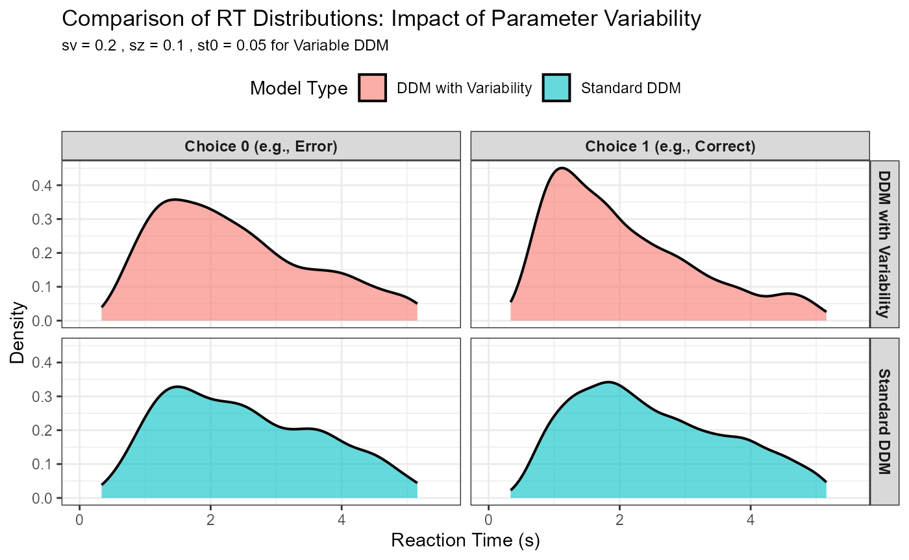
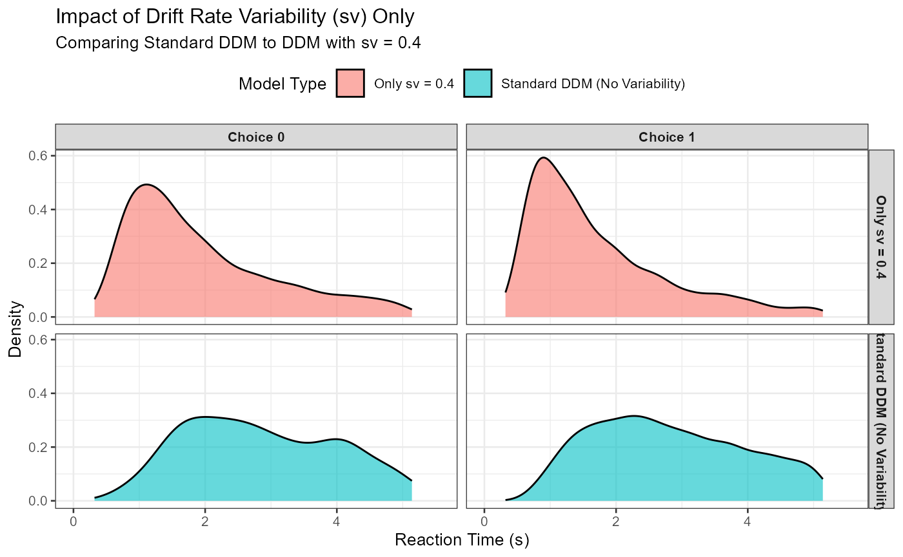
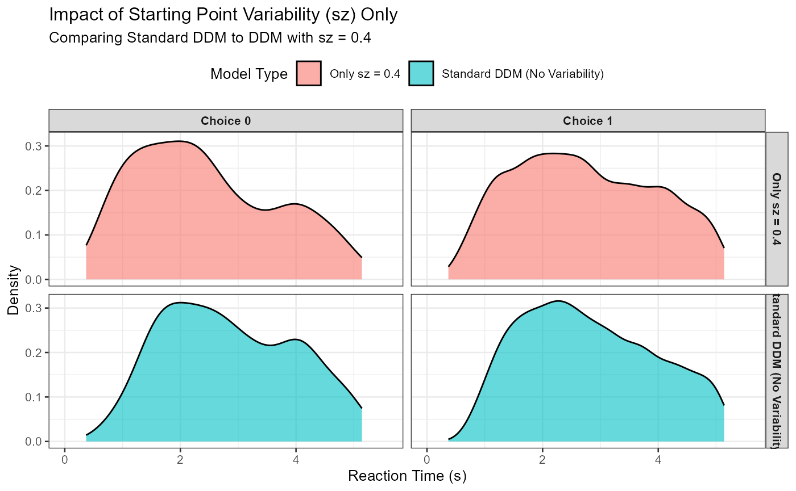
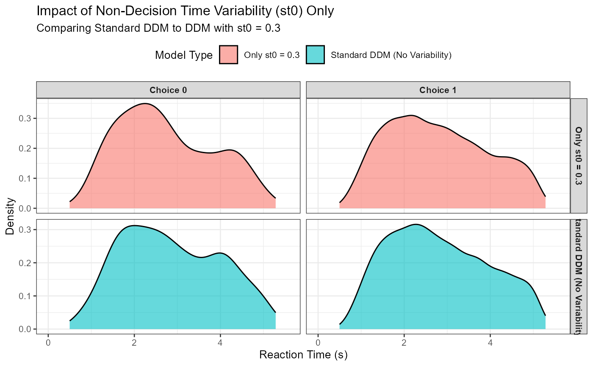

Exploring Across-Trial Parameter Variability in the DDM
Dogukan Nami Oztas
2025-05-16
03_parameter_variability_in_ddm.RmdIntroduction to Across-Trial Parameter Variability
In the basic Diffusion Decision Model (DDM), core parameters like drift rate (v), starting point (z), and non-decision time (ter) are often assumed to be constant across all trials within an experimental condition. However, empirical evidence and theoretical considerations suggest that these parameters can fluctuate from one trial to the next. Incorporating this across-trial parameter variability makes the DDM more realistic and often improves its ability to fit complex patterns in behavioral data.
Why is Variability Important?
More Realistic RT Distributions: Variability, especially in drift rate (sv) and non-decision time (st0), helps capture the full shape of empirical RT distributions, including their characteristic skewness and the spread of the leading edge.
Explaining Error RTs: The relationship between correct and error RTs (e.g., errors being sometimes faster or slower than corrects) is often better explained when considering variability in drift rate (sv) and starting point (sz).
Accounting for Fluctuations: Human cognitive processes are inherently noisy and subject to fluctuations in attention, motivation, and processing efficiency. Parameter variability provides a way to model these fluctuations.
This vignette demonstrates how to simulate the DDM with across-trial variability using the functions in R/03_ddm_simulator_variable.R.
Simulating DDM with Parameter Variability
We have two key functions for this:
simulate_diffusion_trial_variable(): Simulates a single DDM trial where v, z, and ter are sampled from distributions.
simulate_diffusion_experiment_variable(): Simulates multiple trials using simulate_diffusion_trial_variable().
Variability Parameters:
sv (Drift Rate Variability): Standard deviation of a Normal distribution from which the trial-specific drift rate (v_trial) is sampled: v_trial ~ Normal(mean_v, sv).
sz (Starting Point Variability): Range of a Uniform distribution for z_trial: z_trial ~ Uniform(mean_z - sz/2, mean_z + sz/2). The sampled z_trial is clipped to stay within (0, a).
st0 (Non-Decision Time Variability): Range of a Uniform distribution for ter_trial: ter_trial ~ Uniform(mean_ter - st0/2, mean_ter + st0/2). The sampled ter_trial is clipped to be non-negative.
If a variability parameter (e.g., sv) is set to 0, the corresponding model parameter (v_trial) will take its mean value (mean_v) for all trials.
Example: Simulating an Experiment with Variability
Let’s simulate an experiment with variability in all three parameters (v, z, ter).
set.seed(303) # For reproducibility
n_var_trials <- 2000 # Sufficient trials for distribution shapes
# Parameters for the variable DDM simulation
var_params <- list(
mean_v = 0.1,
a = 1.0,
mean_z = 0.5, # Mean starting point (a/2 for unbiased)
s = 0.3, # Within-trial noise (constant)
mean_ter = 0.1, # Mean non-decision time
sv = 0.2, # SD of drift rate variability
sz = 0.2, # Range of starting point variability (z from 0.4 to 0.6)
st0 = 0.05, # Range of non-decision time variability
dt = 0.01
)
ddm_data_variable <- simulate_diffusion_experiment_variable(
n_trials = n_var_trials,
mean_v = var_params$mean_v,
a = var_params$a,
mean_z = var_params$mean_z,
s = var_params$s,
mean_ter = var_params$mean_ter,
sv = var_params$sv,
sz = var_params$sz,
st0 = var_params$st0,
dt = var_params$dt
)
knitr::kable(head(ddm_data_variable), caption = "First 6 trials from DDM with parameter variability.")| trial | choice | rt | decision_time | v_trial | z_trial | ter_trial |
|---|---|---|---|---|---|---|
| 1 | 1 | 4.741999 | 4.63 | 0.0006122 | 0.5219631 | 0.1119988 |
| 2 | 1 | 1.538572 | 1.42 | 0.0774412 | 0.4739782 | 0.1185719 |
| 3 | 1 | 0.864889 | 0.78 | -0.1528199 | 0.5746136 | 0.0848890 |
| 4 | 0 | 1.214346 | 1.12 | -0.1148261 | 0.4718828 | 0.0943463 |
| 5 | 1 | 1.162694 | 1.08 | 0.1351808 | 0.5701450 | 0.0826937 |
| 6 | 0 | 1.468756 | 1.39 | 0.0335632 | 0.5451873 | 0.0787557 |
## choice rt v_trial z_trial
## Min. :0.0000 Min. :0.2164 Min. :-0.56052 Min. :0.4000
## 1st Qu.:0.0000 1st Qu.:1.0149 1st Qu.:-0.03097 1st Qu.:0.4505
## Median :1.0000 Median :1.6323 Median : 0.10460 Median :0.5027
## Mean :0.6703 Mean :1.9051 Mean : 0.10364 Mean :0.5012
## 3rd Qu.:1.0000 3rd Qu.:2.5858 3rd Qu.: 0.23130 3rd Qu.:0.5506
## Max. :1.0000 Max. :5.1133 Max. : 0.76949 Max. :0.5999
## NA's :171 NA's :171
## ter_trial
## Min. :0.07500
## 1st Qu.:0.08680
## Median :0.09994
## Mean :0.09971
## 3rd Qu.:0.11227
## Max. :0.12499
## The output data frame now includes v_trial, z_trial, and ter_trial, showing the specific parameter values used for each simulated trial.
Visualizing Sampled Trial Parameters
We can plot histograms of the sampled parameters to verify they are drawn from the intended distributions.
# Reshape data for easier plotting with ggplot2 (optional, could do separate plots)
params_long <- ddm_data_variable %>%
select(v_trial, z_trial, ter_trial) %>%
pivot_longer(cols = everything(), names_to = "parameter", values_to = "value")
ggplot(params_long, aes(x = value)) +
geom_histogram(aes(y = after_stat(density)), # Plot density for better comparison of shapes
fill = "cornflowerblue", color = "black", alpha = 0.7, bins = 30) +
geom_density(color = "red", linewidth = 1) +
facet_wrap(~parameter, scales = "free") + # Separate plot for each parameter
labs(title = "Distributions of Sampled Trial-Specific Parameters", x = "Parameter Value", y = "Density") +
theme_bw()
v_trial should approximate a Normal distribution.
z_trial and ter_trial should approximate Uniform distributions over their respective ranges (after accounting for any clipping).
Impact of Parameter Variability on RT Distributions
Let’s compare the RT distributions generated by a DDM with across-trial parameter variability to one without it (i.e., a “standard” DDM where v, z, and ter are fixed across trials).
# Parameters for comparison to highlight skewness
n_comp_trials <- 5000 # Increase number of trials
# Standard DDM parameters
std_v <- 0.1
std_a <- 1.0
std_z <- 0.5
std_s <- 0.25
std_ter <- 0.15
# Variable DDM parameters (same means, but with variability)
var_mean_v <- std_v
var_a <- std_a
var_mean_z <- std_z
var_s <- std_s
var_mean_ter <- std_ter
var_sv <- 0.20 # <<--- KEY: Increased sv for more pronounced skew
var_sz <- 0.1 # Moderate sz
var_st0 <- 0.05 # Moderate st0
# Simulate Standard DDM
set.seed(305) # New seed for new simulation
ddm_data_standard_skew <- simulate_diffusion_experiment(
n_trials = n_comp_trials,
v = std_v,
a = std_a,
z = std_z,
s = std_s,
ter = std_ter,
dt = 0.01 # Assuming dt is handled in your function, else add it
)
# Simulate DDM with Variability
set.seed(305) # Use the same seed for the variable part for closer comparison
ddm_data_variable_skew <- simulate_diffusion_experiment_variable(
n_trials = n_comp_trials,
mean_v = var_mean_v,
a = var_a,
mean_z = var_mean_z,
s = var_s,
mean_ter = var_mean_ter,
sv = var_sv,
sz = var_sz,
st0 = var_st0,
dt = 0.01 # Assuming dt is handled in your function
)
# Add a 'model_type' column
ddm_data_standard_skew$model_type <- "Standard DDM"
ddm_data_variable_skew$model_type <- "DDM with Variability"
# Combine data
combined_plot_data_skew <- bind_rows(
ddm_data_standard_skew %>% select(rt, choice, model_type),
ddm_data_variable_skew %>% select(rt, choice, model_type)
) %>%
filter(!is.na(rt)) %>%
mutate(choice_label = factor(choice, levels = c(0,1), labels = c("Choice 0 (e.g., Error)", "Choice 1 (e.g., Correct)")))
# Calculate Mean and Median to numerically check skewness
summary_stats_skew <- combined_plot_data_skew %>%
group_by(model_type, choice_label) %>%
summarise(
N = n(),
Mean_RT = mean(rt, na.rm = TRUE),
Median_RT = median(rt, na.rm = TRUE),
SD_RT = sd(rt, na.rm = TRUE),
Skewness_coeff = if(N > 2) moments::skewness(rt, na.rm=TRUE) else NA # Requires 'moments' package
) %>% ungroup()
print("Summary Statistics for RTs (Mean > Median indicates right skew):")## [1] "Summary Statistics for RTs (Mean > Median indicates right skew):"
knitr::kable(summary_stats_skew, digits = 3)| model_type | choice_label | N | Mean_RT | Median_RT | SD_RT | Skewness_coeff |
|---|---|---|---|---|---|---|
| DDM with Variability | Choice 0 (e.g., Error) | 1350 | 2.364 | 2.150 | 1.166 | 0.580 |
| DDM with Variability | Choice 1 (e.g., Correct) | 2914 | 2.064 | 1.783 | 1.122 | 0.835 |
| Standard DDM | Choice 0 (e.g., Error) | 648 | 2.510 | 2.370 | 1.173 | 0.370 |
| Standard DDM | Choice 1 (e.g., Correct) | 3318 | 2.506 | 2.310 | 1.167 | 0.404 |
# Plot density distributions
# Adjust xlim to see the tails better
rt_upper_quantile_for_plot <- quantile(combined_plot_data_skew$rt, 0.99, na.rm = TRUE) # Show 99% of data
p_rt_comparison_skew <- ggplot(combined_plot_data_skew, aes(x = rt, fill = model_type)) +
geom_density(alpha = 0.6, linewidth = 0.7) + # Removed color=model_type for clearer fill
facet_grid(model_type ~ choice_label) + # Facet by model_type rows, choice_label columns
labs(
title = "Comparison of RT Distributions: Impact of Parameter Variability",
subtitle = paste("sv =", var_sv, ", sz =", var_sz, ", st0 =", var_st0, "for Variable DDM"),
x = "Reaction Time (s)",
y = "Density",
fill = "Model Type"
) +
coord_cartesian(xlim = c(0, rt_upper_quantile_for_plot * 1.1)) + # Zoom appropriately
theme_bw(base_size = 11) + # Using theme_bw for clearer facets
theme(legend.position = "top",
strip.text = element_text(size = 9, face="bold"), # Make facet labels clearer
plot.subtitle = element_text(size=9))
print(p_rt_comparison_skew)
Observations from the Comparison:
Skewness: The DDM with parameter variability (especially sv) typically produces RT distributions that are more positively skewed (longer right tail) than the standard DDM.
Leading Edge: st0 (variability in non-decision time) will tend to spread out the leading edge (fastest RTs) of the distribution.
Error RTs: The relationship between correct RTs and error RTs can change significantly. For example, sv can lead to “slow errors” (errors are slower than corrects) if, on some trials, the drift rate is small or even slightly in the wrong direction. sz can contribute to “fast errors” if the starting point happens to be close to the incorrect boundary.
Overall Fit: For real data, models incorporating these variabilities often provide a substantially better quantitative fit.
Exploring Individual Variability Components
To better understand how each source of across-trial variability affects the model’s predictions, we can simulate scenarios where only one variability parameter is non-zero at a time. We will compare these to our ddm_data_standard_skew (simulated earlier with no across-trial variability) as a baseline.
Parameters for these focused simulations:
(We’ll use the same mean parameters as in the previous comparison for
consistency, and a common number of trials.)
# These should match the parameters used for ddm_data_standard_skew
# Or redefine them if this section is run independently
n_iso_trials <- 5000 # Number of trials for each isolated simulation
# Base mean parameters (same as previous comparison)
base_mean_v <- 0.1
base_a <- 1.0
base_mean_z <- 0.5
base_s <- 0.2
base_mean_ter <- 0.15
base_dt <- 0.01
# Magnitude of variability to explore for each component
iso_sv_val <- 0.40
iso_sz_val <- 0.40 # Range for z: mean_z +/- 0.1
iso_st0_val <- 0.3 # Range for ter: mean_ter +/- 0.05
# Re-simulate standard DDM if not available or to ensure consistency with n_iso_trials
set.seed(305) # Match seed from previous standard sim if desired
ddm_data_standard_iso <- simulate_diffusion_experiment(
n_trials = n_iso_trials,
v = base_mean_v, a = base_a, z = base_mean_z,
s = base_s, ter = base_mean_ter, dt = base_dt
)
ddm_data_standard_iso$model_type <- "Standard DDM (No Variability)"1. Effect of Drift Rate Variability (sv) Only
Drift rate variability (sv) is often the most impactful, particularly on the overall skew of RT distributions and the characteristics of error responses.
set.seed(401) # New seed for this specific simulation
ddm_data_sv_only <- simulate_diffusion_experiment_variable(
n_trials = n_iso_trials,
mean_v = base_mean_v, a = base_a, mean_z = base_mean_z,
s = base_s, mean_ter = base_mean_ter, dt = base_dt,
sv = iso_sv_val, # Only sv is non-zero
sz = 0,
st0 = 0
)
ddm_data_sv_only$model_type <- paste0("Only sv = ", iso_sv_val)
# Combine with standard for plotting
combined_sv_data <- bind_rows(
ddm_data_standard_iso %>% select(rt, choice, model_type),
ddm_data_sv_only %>% select(rt, choice, model_type)
) %>%
filter(!is.na(rt)) %>%
mutate(choice_label = factor(choice, levels = c(0,1), labels = c("Choice 0", "Choice 1")))
# Plot
p_sv_effect <- ggplot(combined_sv_data, aes(x = rt, fill = model_type)) +
geom_density(alpha = 0.6) +
facet_grid(model_type ~ choice_label) +
labs(
title = "Impact of Drift Rate Variability (sv) Only",
subtitle = paste("Comparing Standard DDM to DDM with sv =", iso_sv_val),
x = "Reaction Time (s)", y = "Density", fill = "Model Type"
) +
coord_cartesian(xlim = c(0, quantile(combined_sv_data$rt, 0.99, na.rm = TRUE) * 1.1)) +
theme_bw(base_size = 10) +
theme(legend.position = "top", strip.text = element_text(size = 8, face="bold"))
print(p_sv_effect)
# Summary Stats
summary_sv <- combined_sv_data %>% group_by(model_type, choice_label) %>%
summarise(N=n(), Mean_RT=mean(rt), Median_RT=median(rt), .groups="drop")
knitr::kable(summary_sv, caption = "RT Summary: sv effect", digits=3)| model_type | choice_label | N | Mean_RT | Median_RT |
|---|---|---|---|---|
| Only sv = 0.4 | Choice 0 | 1720 | 1.957 | 1.62 |
| Only sv = 0.4 | Choice 1 | 2684 | 1.723 | 1.39 |
| Standard DDM (No Variability) | Choice 0 | 245 | 2.857 | 2.74 |
| Standard DDM (No Variability) | Choice 1 | 3198 | 2.810 | 2.68 |
Expected Observation: With sv > 0, the RT distributions (especially for the choice favored by mean_v) should become more right-skewed compared to the standard DDM. You might also see more “slow errors” if sv is large enough for v_trial to sometimes be near zero or negative.
2. Effect of Starting Point Variability (sz) Only
Starting point variability (sz) primarily influences the probability of fast errors and can slightly affect the overall RT distribution shape.
set.seed(402)
ddm_data_sz_only <- simulate_diffusion_experiment_variable(
n_trials = n_iso_trials,
mean_v = base_mean_v, a = base_a, mean_z = base_mean_z,
s = base_s, mean_ter = base_mean_ter, dt = base_dt,
sv = 0,
sz = iso_sz_val, # Only sz is non-zero
st0 = 0
)
ddm_data_sz_only$model_type <- paste0("Only sz = ", iso_sz_val)
combined_sz_data <- bind_rows(
ddm_data_standard_iso %>% select(rt, choice, model_type),
ddm_data_sz_only %>% select(rt, choice, model_type)
) %>%
filter(!is.na(rt)) %>%
mutate(choice_label = factor(choice, levels = c(0,1), labels = c("Choice 0", "Choice 1")))
p_sz_effect <- ggplot(combined_sz_data, aes(x = rt, fill = model_type)) +
geom_density(alpha = 0.6) +
facet_grid(model_type ~ choice_label) +
labs(
title = "Impact of Starting Point Variability (sz) Only",
subtitle = paste("Comparing Standard DDM to DDM with sz =", iso_sz_val),
x = "Reaction Time (s)", y = "Density", fill = "Model Type"
) +
coord_cartesian(xlim = c(0, quantile(combined_sz_data$rt, 0.99, na.rm = TRUE) * 1.1)) +
theme_bw(base_size = 10) +
theme(legend.position = "top", strip.text = element_text(size = 8, face="bold"))
print(p_sz_effect)
summary_sz <- combined_sz_data %>% group_by(model_type, choice_label) %>%
summarise(N=n(), Mean_RT=mean(rt), Median_RT=median(rt), .groups="drop")
knitr::kable(summary_sz, caption = "RT Summary: sz effect", digits=3)| model_type | choice_label | N | Mean_RT | Median_RT |
|---|---|---|---|---|
| Only sz = 0.4 | Choice 0 | 330 | 2.440 | 2.275 |
| Only sz = 0.4 | Choice 1 | 3137 | 2.738 | 2.640 |
| Standard DDM (No Variability) | Choice 0 | 245 | 2.857 | 2.740 |
| Standard DDM (No Variability) | Choice 1 | 3198 | 2.810 | 2.680 |
Expected Observation: sz > 0 can lead to a slight increase in the variance of RTs. More notably, if mean_v strongly favors one response, sz can increase the likelihood of fast errors for the other response (if z_trial happens to start closer to that incorrect boundary). The overall skew might not change as dramatically as with sv.
3. Effect of Non-Decision Time Variability (st0) Only
Non-decision time variability (st0) primarily affects the spread of the leading edge (fastest part) of the RT distribution.
set.seed(403)
ddm_data_st0_only <- simulate_diffusion_experiment_variable(
n_trials = n_iso_trials,
mean_v = base_mean_v, a = base_a, mean_z = base_mean_z,
s = base_s, mean_ter = base_mean_ter, dt = base_dt,
sv = 0,
sz = 0,
st0 = iso_st0_val # Only st0 is non-zero
)
ddm_data_st0_only$model_type <- paste0("Only st0 = ", iso_st0_val)
combined_st0_data <- bind_rows(
ddm_data_standard_iso %>% select(rt, choice, model_type),
ddm_data_st0_only %>% select(rt, choice, model_type)
) %>%
filter(!is.na(rt)) %>%
mutate(choice_label = factor(choice, levels = c(0,1), labels = c("Choice 0", "Choice 1")))
p_st0_effect <- ggplot(combined_st0_data, aes(x = rt, fill = model_type)) +
geom_density(alpha = 0.6) +
facet_grid(model_type ~ choice_label, scales = "free_y") + # Facet by model_type and choice
labs(
title = "Impact of Non-Decision Time Variability (st0) Only",
subtitle = paste("Comparing Standard DDM to DDM with st0 =", iso_st0_val),
x = "Reaction Time (s)", y = "Density", fill = "Model Type"
) +
coord_cartesian(xlim = c(0, quantile(combined_st0_data$rt, 0.99, na.rm = TRUE) * 1.1)) +
theme_bw(base_size = 10) +
theme(legend.position = "top", strip.text = element_text(size = 8, face="bold"))
print(p_st0_effect)
summary_st0 <- combined_st0_data %>% group_by(model_type, choice_label) %>%
summarise(N=n(), Mean_RT=mean(rt), Median_RT=median(rt), .groups="drop")
knitr::kable(summary_st0, caption = "RT Summary: st0 effect", digits=3)| model_type | choice_label | N | Mean_RT | Median_RT |
|---|---|---|---|---|
| Only st0 = 0.3 | Choice 0 | 264 | 2.740 | 2.541 |
| Only st0 = 0.3 | Choice 1 | 3188 | 2.790 | 2.684 |
| Standard DDM (No Variability) | Choice 0 | 245 | 2.857 | 2.740 |
| Standard DDM (No Variability) | Choice 1 | 3198 | 2.810 | 2.680 |
Expected Observation: With st0 > 0, the RT distributions should look “smeared out” more uniformly, especially at the fast end. The minimum RT will be effectively mean_ter - st0/2 (plus minimum decision time), and the overall distribution will be a convolution of the decision time distribution and the uniform ter distribution. It tends to make the entire distribution wider without necessarily increasing skew as much as sv does.
Conclusion
Across-trial parameter variability is a critical extension to the basic DDM. By allowing drift rate, starting point, and non-decision time to fluctuate from trial to trial, the model can more accurately capture the richness and complexity of human decision-making behavior, particularly the full shape of RT distributions and the patterns of error responses.
The functions simulate_diffusion_trial_variable() and simulate_diffusion_experiment_variable() in your R scripts provide the tools to explore these more nuanced aspects of the DDM.